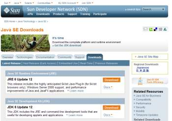
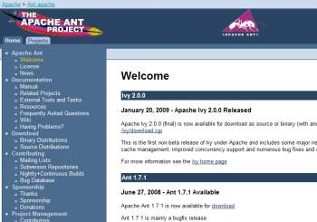

C:\temp\abcl\abcl-src-0.12.0\dist>java -jar abcl.jar Armed Bear Common Lisp 0.12.0 Java 1.6.0_05 Sun Microsystems Inc. Java HotSpot(TM) Client VM Low-level initialization completed in 1.262 seconds. Startup completed in 4.556 seconds. Type ":help" for a list of available commands. CL-USER(1): (list 'welcome 'to 'lisp!) (WELCOME TO LISP!) CL-USER(2):
This page describes one way Java programmers can use to build an application. In addition to the Java development kit, which is described below, this way also uses a tool called Ant. Ant is a program familiar to Java developers. It performs the same sort of tasks that make does for C programmers, ie it provides a convenient means of managing the compilation and program building tasks that a complex application requires.
Users of Java IDEs (Integrated Development Environment) such as Eclipse or NetBeans can build the ABCL JAR file within these environments. If you are using these tools you will have already downloaded the JDK, and these tools already have a version of Ant installed. See the documentation for these tools if you wish to use these to build the ABCL JAR file.
To install ABCL from the source code as described on this page you need:
Once you have these pre-requisites sorted, you can then go ahead and build ABCL. If you wish to use Linux there are further steps to perform.
ABCL needs at least Java 1.5. How do you know if you have this or not? Well, for Windows users the quickest way to find out is to open a new command window (click Start, then Run, type cmd and click OK). At the command prompt type java -version. If you have the Java.exe executable in your path you will see output similar to this:
C:\>java -version java version "1.6.0_11" Java(TM) SE Runtime Environment (build 1.6.0_11-b03) Java HotSpot(TM) Client VM (build 11.0-b16, mixed mode, sharing)
This will work because it is a version later than Java 1.5. However, if you get this response:
'java' is not recognized as an internal or external command, operable program or batch file.
It means one of two things, either you don't have Java installed, or if you do it is not on your path. To check which one it is type:
dir /s c:\java.exe
This command may take a long time to run, as it is doing a search of your hard drive, which may be large and have many files. (Of course you can, if you prefer, use the Windows search tool: Start -- Search.) A typical response may be:
C:\>dir /s \java.exe
Volume in drive C is Windows
Volume Serial Number is 7DDF-ABBD
Directory of C:\Program Files\Java\jre1.5.0_13\bin
25/09/2007 19:26 49,248 java.exe
1 File(s) 49,248 bytes
Directory of C:\Program Files\Java\jre1.6.0_03\bin
24/09/2007 21:30 135,168 java.exe
1 File(s) 135,168 bytes
Directory of C:\Program Files\Java\jre1.6.0_05\bin
22/02/2008 00:23 135,168 java.exe
1 File(s) 135,168 bytes
If you don't get any results then you don't have the Java runtime system installed. To install it go to java.com, and click the big blue button that is on that page (it's not subtle, as you can see from the image at right!). Be aware that Java downloads are quite large, so if you need to install or upgrade your version of Java you should do this when you have access to decent Internet bandwidth.
Your download will be an executable file. When you click the button there are full details on how to download and install the software on to your computer.
The runtime system includes everything that you need to run a Java program. This means it has the core executables (eg java.exe), as well as all the supporting library files needed to make Java work with your particular operating system. However downloading the JRE alone is not enough...
topThe JDK is a different beast to the runtime environment (JRE). You need the JRE to actually execute Java code, and without it nothing will work. But if you want to go further and write your own Java programs, or compile Java code written by others, as we do here, then you will need more than the JRE -- you will need the Java development kit. The JDK gives you the basic tools to compile Java source code. How do you know if you have the JDK installed? Well again arguably the quickest way is to just search your hard drive for javac.exe (javac is the java compiler). If you get no response you don't have the JDK installed.
As with the JRE the JDK is available for free from Sun. To download the  version you are interested in go to the Sun website, java.sun.com, click on the Java SE link to the right and then choose the JDK. Alternatively you can use their search form -- just enter "JDK". Java comes in various 'flavours': the SE is the Standard Edition, and is the one you want; the others are EE, which is the Enterprise Edition, and is used for creating web-based solutions using Java Bean and Servlet technologies; and ME is the Micro Edition, used to run Java on small devices such as phones and PDAs. [Now how cool would it be to have Lisp on your phone? There's a thought!]
Make sure you download the JDK, not the JRE (unless of course you want to upgrade your current JRE to a different version). Sun offers the JDK with some of its other tools, such as NetBeans. NetBeans is an integrated development environment (IDE), which lets you edit your code in a window, and then run it, debug it, and manage your applications all within one package. There is a learning curve to NetBeans; it is a great IDE, but if you just want to get ABCL running you don't need all its bells and whistles.
The JDK is even bigger than the JRE. For example, JDK 6 Update 12 is 73MB. Installation of the JDK follows the same process as for the JRE: save the executable to disk and then execute it. This does take quite some time, so please be patient.
topAnt is an open source project managed by the Apache organisation, that is used to manage the compilation and building of larger Java projects. It's home  page is at ant.apache.org. To download this tool go to their download page. Choose the appropriate package for your platform (for example Windows users will select the zip archive). Extract the files from the package. Windows users can either user the built in feature of Windows explorer: double click on the zip file; in the window that pops up click File then Extract All (the fastest way to start Explorer: right-click on the Start button and click Explore).
If you are on a Unix platform you can use tar to extract the files. As the package is a tar.gz file you can use the z option to tar to uncompress the archive, before extracting it. This command will both uncompress and extract the archive in one go (assuming, of course, that your archive is the 1.7.1 version of ant):
tar zxvf apache-ant-1.7.1-bin.tar.gz
The installation instructions are on the ant website. You should read through those to understand what needs to be done. The description below shows how these were applied when installing Ant on a Windows sytem. The first action that is required is to add the Ant bin directory to your system path. From a command prompt you can type the following commands. The first modifies the path variable, so the bin directory is visible from anywhere. The second command executes the ant executable.
C:\temp\ant\apache-ant-1.7.1>PATH=%PATH%;C:\temp\ant\apache-ant-1.7.1\bin C:\temp\ant\apache-ant-1.7.1>ant Unable to locate tools.jar. Expected to find it in C:\Program Files\Java\jre1.6.0_05\lib\tools.jar Buildfile: build.xml does not exist! Build failed C:\temp\ant\apache-ant-1.7.1>
Opps! No tool.jar file. Obviously this is part of the JDK, and so a quick search shows where it is. We can then set the JAVA_HOME and ANT_HOME environment variables and try again:
C:\temp\ant\apache-ant-1.7.1>dir \tools.jar /s
Volume in drive C has no label.
Volume Serial Number is 7DDF-ABBD
Directory of C:\Program Files\Java\jdk1.6.0_03\lib
25/09/2007 00:11 12,171,847 tools.jar
1 File(s) 12,171,847 bytes
Total Files Listed:
3 File(s) 21,523,154 bytes
0 Dir(s) 11,194,011,648 bytes free
C:\temp\ant\apache-ant-1.7.1>set JAVA_HOME=C:\Program Files\Java\jdk1.6.0_03
C:\temp\ant\apache-ant-1.7.1>set ANT_HOME=C:\temp\ant\apache-ant-1.7.1
C:\temp\ant\apache-ant-1.7.1>ant
Buildfile: build.xml does not exist!
Build failed
C:\temp\ant\apache-ant-1.7.1>ant -version
Apache Ant version 1.7.1 compiled on June 27 2008
C:\temp\ant\apache-ant-1.7.1>
Success, my build failed! (How oxymoronic is that?) Note that these changes are only temporary. When you exit out of the command line shell you will lose these settings. To preserve them for future shell sessions do this:
OK, back to the build process. We are nearly there! You should change to the directory where you installed the ABCL source code. Once there you can run Ant against the build.xml file, which is the file that contains all the build instructions Ant needs to create the target Jar file. You specify the build file using the -f option. By default this file shows you a help message on how to use it:
C:\temp\ant\apache-ant-1.7.1>cd \temp\abcl\abcl-src-0.12.0
C:\temp\abcl\abcl-src-0.12.0>ant -f build.xml
Buildfile: build.xml
help:
[echo] Main Ant targets:
[echo] abcl.compile
[echo] -- compile ABCL to C:\temp\abcl\abcl-src-0.12.0/build/classes
[echo] abcl.jar
[echo] -- create packaged C:\temp\abcl\abcl-src-0.12.0/dist/abcl.jar
[echo] abcl.wrapper
[echo] -- create executable wrapper for ABCL
[echo] abcl.source.zip abcl.source.tar
[echo] -- create source distributions in C:\temp\abcl\abcl-src-0.12.0/dist
[echo] abcl.clean
[echo] -- remove ABCL intermediate files
[echo] Corresponding targets for J exist, but currently aren't as well tested.
[echo]
BUILD SUCCESSFUL
Total time: 0 seconds
C:\temp\abcl\abcl-src-0.12.0>
We want to create the JAR (Java ARchive) file. So we specify the abcl.jar target, hit RETURN, and wait. Note that a large proportion of the output has been removed from the listing below:
C:\temp\abcl\abcl-src-0.12.0>ant -f build.xml abcl.jar
Buildfile: build.xml
abcl.pre-compile:
[mkdir] Created dir: C:\temp\abcl\abcl-src-0.12.0\build
[mkdir] Created dir: C:\temp\abcl\abcl-src-0.12.0\build\classes
[echo] java.version: 1.6.0_03
abcl.copy.lisp:
[copy] Copying 188 files to C:\temp\abcl\abcl-src-0.12.0\build\classes
abcl.java.warning:
[echo] WARNING: Java version 1.6.0_03 not recommended.
abcl.compile.java:
[javac] Compiling 257 source files to C:\temp\abcl\abcl-src-0.12.0\build\cla
sses
[javac] Note: Some input files use unchecked or unsafe operations.
[javac] Note: Recompile with -Xlint:unchecked for details.
abcl.fasls.uptodate:
abcl.compile.lisp:
[java] Armed Bear Common Lisp 0.12.0 (built Mon Feb 23 2009 14:35:46 GMT)
[java] Java 1.6.0_03 Sun Microsystems Inc.
[java] Java HotSpot(TM) Client VM
[java] Low-level initialization completed in 0.731 seconds.
[java] Startup completed in 4.597 seconds.
[java] ; Compiling C:\temp\abcl\abcl-src-0.12.0\build\classes\org\armedbear\lisp\coerce.lisp ...
[java] ; (IN-PACKAGE #:SYSTEM)
[java] ; (DECLAIM (FTYPE # ...))
[java] ; (DEFUN COERCE-LIST-TO-VECTOR ...)
[java] ; (DECLAIM (FTYPE # ...))
[java] ; (DEFUN COPY-STRING ...)
[java] ; (DEFUN COERCE-ERROR ...)
[java] ; (DECLAIM (FTYPE # ...))
[java] ; (DEFUN COERCE-OBJECT-TO-AND-TYPE ...)
[java] ; (DEFUN COERCE ...)
[java] ; Wrote C:\temp\abcl\abcl-src-0.12.0\build\classes\org\armedbear\lisp\coerce.abcl (0.661 seconds)
[java] ; Compiling C:\temp\abcl\abcl-src-0.12.0\build\classes\org\armedbear\lisp\open.lisp ...
[java] ; (IN-PACKAGE #:SYSTEM)
[java] ; (DEFUN UPGRADED-ELEMENT-TYPE-BITS ...)
[java] ; (DEFUN UPGRADED-ELEMENT-TYPE ...)
[java] ; (DEFUN OPEN ...)
[java] ; Wrote C:\temp\abcl\abcl-src-0.12.0\build\classes\org\armedbear\lisp\open.abcl (0.641 seconds)
[java] ; Compiling C:\temp\abcl\abcl-src-0.12.0\build\classes\org\armedbear\lisp\dump-form.lisp ...
[java] ; (IN-PACKAGE "SYSTEM")
[java] ; (DECLAIM (FTYPE # ...))
[java] ; (DEFUN DUMP-CONS ...)
[java] ; (DECLAIM (FTYPE # ...))
[java] ; (DEFUN DUMP-VECTOR ...)
[java] ; (DECLAIM (FTYPE # ...))
...
lots and lots of output here
...
[java] ; (DEFMACRO WITH-SLOTS ...)
[java] ; Wrote C:\temp\abcl\abcl-src-0.12.0\build\classes\org\armedbear\lisp\with-slots.abcl (0.11 seconds)
[java] ; Compiling C:\temp\abcl\abcl-src-0.12.0\build\classes\org\armedbear\lisp\with-standard-io-syntax.lisp ...
[java] ; (IN-PACKAGE "SYSTEM")
[java] ; (DEFUN %WITH-STANDARD-IO-SYNTAX ...)
[java] ; (DEFMACRO WITH-STANDARD-IO-SYNTAX ...)
[java] ; Wrote C:\temp\abcl\abcl-src-0.12.0\build\classes\org\armedbear\lisp\with-standard-io-syntax.abcl (0.131 seconds)
[java] ; Compiling C:\temp\abcl\abcl-src-0.12.0\build\classes\org\armedbear\lisp\with-thread-lock.lisp ...
[java] ; (IN-PACKAGE "EXTENSIONS")
[java] ; (DEFMACRO WITH-THREAD-LOCK ...)
[java] ; Wrote C:\temp\abcl\abcl-src-0.12.0\build\classes\org\armedbear\lisp\with-thread-lock.abcl (0.08 seconds)
[java] ; Compiling C:\temp\abcl\abcl-src-0.12.0\build\classes\org\armedbear\lisp\write-sequence.lisp ...
[java] ; (IN-PACKAGE #:SYSTEM)
[java] ; (DEFUN WRITE-SEQUENCE ...)
[java] ; Wrote C:\temp\abcl\abcl-src-0.12.0\build\classes\org\armedbear\lisp\write-sequence.abcl (0.09 seconds)
[java] 283.678 seconds real time
[java] 71118074 cons cells
abcl.compile:
[echo] Compiled ABCL with java version: 1.6.0_03
abcl.stamp:
abcl.pre-compile:
[echo] java.version: 1.6.0_03
abcl.copy.lisp:
abcl.java.warning:
[echo] WARNING: Java version 1.6.0_03 not recommended.
abcl.compile.java:
abcl.fasls.uptodate:
abcl.compile.lisp:
abcl.compile:
[echo] Compiled ABCL with java version: 1.6.0_03
abcl.stamp.version:
[echo] Building ABCL version: 0.12.0
abcl.stamp.hostname:
[echo] abcl.hostname: IBM-D396A533B48
abcl.jar:
[jar] Building jar: C:\temp\abcl\abcl-src-0.12.0\dist\abcl.jar
BUILD SUCCESSFUL
Total time: 6 minutes 6 seconds
C:\temp\abcl\abcl-src-0.12.0>
The last line of output is our target file: C:\temp\abcl\abcl-src-0.12.0\dist\abcl.jar. This is actually quite an intelligent JAR file, as it knows the name of the main Java class to run. This means quite a lot of the complexity of actually running the application is hidden from the user. So we can run the JAR file from the command line, using java.exe with only its -jar option:
C:\temp\abcl\abcl-src-0.12.0>dir C:\temp\abcl\abcl-src-0.12.0\dist\abcl.jar
Volume in drive C has no label.
Volume Serial Number is 7DDF-ABBD
Directory of C:\temp\abcl\abcl-src-0.12.0\dist
23/02/2009 14:41 5,634,488 abcl.jar
1 File(s) 5,634,488 bytes
0 Dir(s) 11,169,034,240 bytes free
C:\temp\abcl\abcl-src-0.12.0>java -jar C:\temp\abcl\abcl-src-0.12.0\dist\abcl.jar
Armed Bear Common Lisp 0.12.0
Java 1.6.0_05 Sun Microsystems Inc.
Java HotSpot(TM) Client VM
Low-level initialization completed in 2.413 seconds.
Startup completed in 6.519 seconds.
Type ":help" for a list of available commands.
CL-USER(1):
Winner! We now have a working version of ABCL. Put the JAR file on a memory stick or CD and you have your own personal Lisp system available to you where ever you are. Now how cool is that?
topBecause ABCL is a Java application, it should in theory be possible to run this on any computer where the Java Virtual Machine (JVM) is installed. However, if you wish to run this on Linux you need to perform the following actions to allow ABCL to run correctly. If you just run the JAR file, then you will find the arrow keys (ie up, down, left and right) do not function correctly. Instead, you get output as shown below (here the keys entered were, in order, up, right, down, and left):
Armed Bear Common Lisp 0.12.0 Java 1.6.0 IBM Corporation IBM J9 VM Low-level initialization completed in 0.718 seconds. Startup completed in 2.411 seconds. Type ":help" for a list of available commands. CL-USER(1): ^[[A^[[C^[[B^[[D
Here you can see that you are not getting the correct response. You need to get the tool rlwrap. To use this you need to first install the software. Download the source code, the current version of which is in rlwrap-0.30.tar.gz. Extract the contents to your system. For example, if you want to extract into /tmp save the file to somewhere on your system, and then run this command:
cd /tmp tar zxvf /path/to/rlwrap-0.30.tar.gz
In this case it will create the directory /tmp/rlwrap-0.30.tar.gz To perform the remaining commands you should su to root. This will then allow you to intall the binary in /usr/local/bin. Run the following commands as root:
cd /tmp/rlwrap-0.30 ./configure make make install
Now we need to create the file .abcl_completions. To do this save the following Lisp code to a file, say test.lisp:
(do-all-symbols (sym)
(let ((package (symbol-package sym)))
(cond
((not (fboundp sym)))
((or (eql #.(find-package :cl) package)
(eql #.(find-package :extensions) package)
(eql #.(find-package :cl-user) package))
(pushnew (symbol-name sym) symbols))
((eql #.(find-package :keyword) package)
(pushnew (concatenate 'string ":" (symbol-name sym)) symbols))
(package
(pushnew (concatenate 'string
(package-name package)
":"
(symbol-name sym))
symbols)))))
(with-open-file (output #.(concatenate 'string
(getenv "HOME")
"/.abcl_completions")
:direction :output :if-exists :overwrite
:if-does-not-exist :create)
(format output "~{~(~A~)~%~}" (sort symbols #'string<)))
(quit))
Now create the .abcl_completions by running this command:
java -jar abcl.jar --load test.lisp
The final (quit) ensures this Lisp command returns you to the command line when it completes. It creates the .abcl_completions file in your home directory. We still need to do one more thing, before we create the lisp executable. If you need to know the path to the abcl.jar file If you don't know what it is you can search for it:
find / 2>/dev/null -name abcl.jar
If this does not return any names, try replacing abcl.jar with abcl\*.jar, as the JAR file may have a version number included. Consider that the filename returned is /opt/abcl/abcl.jar, then we will need the line ABCL_JAR=/opt/abcl/abcl.jar in our script. So bearing this in mind, we can now create a script file that we can call /usr/local/bin/lisp:
#!/bin/sh ABCL_JAR=/opt/abcl/abcl.jar # Use your own path here. JAVA=$(which java) ABCL="$JAVA -server -Xrs -cp $ABCL_JAR org.armedbear.lisp.Main" if [ $# -eq 0 ]; then exec rlwrap -b "[]()'\" " --remember -c -f ~/.abcl_completions \ -H ~/.abcl_history -s 1000000 $ABCL else exec $ABCL "$@" fi
Now when you use this lisp command you will get the keystroke behaviour you expect.
top home